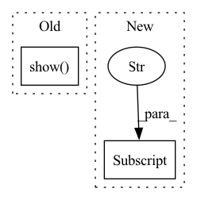

Pattern ID :22127

Before Change
fig, ax = plt.subplots()
for name, group in logs.groupby("uid"):
group.plot.line(x="relative_time", y="top_1", ax=ax)
plt.show()
last = logs.sort_values("epoch").groupby("uid").last()
keep = ["relative_time", "epoch", "top_1", "top_5", "training.batch_size",
"resolution.max_res", "resolution.min_res", "model.antialias", "resolution.end_ramp", "training.weight_decay"]
last = last[keep].sort_values("top_5")
After Change
all_logs.append(logs)
logs = pd.concat(all_logs)
logs["delta"] = logs["training.epochs"] - logs["resolution.end_ramp"]
def plot_all(x="epoch", by_col=None):
fig, ax = plt.subplots()
print(by_col)
In pattern: SUPERPATTERN
Frequency: 4
Non-data size: 2
Instances
Fragment ID: 70097933
Project Name: libffcv/ffcv
Commit Name: 42c1f93136351919b3727e42cbf1857966d5f750
Time: 2021-11-11
Author: engstrom@csail.mit.edu
File Name: examples/imagenet_collect.py
M Class Name: AnonimousClass
N Class Name: AnonimousClass
M Method Name: main(1)
N Method Name: main(1)
M Parent Class:
N Parent Class:
M File Name: examples/imagenet_collect.py
N File Name: examples/imagenet_collect.py
M Start Line: 45
M End Line: 55
N Start Line: 46
N End Line: 84
'>
Before Change
ha="center", va="center", color="w")
ax.set_title("Importance of features and timesteps")
plt.show()
plt.figure()
plt.title("Feature importance")
plt.bar(range(self.ins + self.outs), betas)
After Change
alphas = alphas.transpose(1, 0) // (ins, lookback)
all_cols = self.data_config["inputs"] if self.use_predicted_output else self.data_config["inputs"] + self.data_config["outputs"]
plt.close("all")
fig, ax = plt.subplots()
fig.set_figwidth(60)
'>
Fragment ID: 70097934
Project Name: atrcheema/dl4seq
Commit Name: 893eba337d0158183279d791c1fa91069b0e6d6a
Time: 2020-10-29
Author: ather_abbas786@yahoo.com
File Name: models/pytorch_models.py
M Class Name: IMVLSTMModel
N Class Name: IMVLSTMModel
M Method Name: plot_activations(1)
N Method Name: plot_activations(1)
M Parent Class: HARHNModel
N Parent Class: HARHNModel
M File Name: models/pytorch_models.py
N File Name: models/pytorch_models.py
M Start Line: 400
M End Line: 421
N Start Line: 405
N End Line: 429
'>
Before Change
plt.xlabel("Epoch")
plt.ylabel("Loss")
plt.legend()
plt.show()
if __name__ == "__main__":
device = "cuda" if torch.cuda.is_available() else "cpu"
After Change
model = model.to(device)
if "previous_path" in config:
model_state = torch.load(config["previous_path"], map_location=device)
model.load_state_dict(model_state)
dataset = IntentTransformerDataset(dataset_nums, img_transform=transforms.ToTensor())
'>
Fragment ID: 70097931
Project Name: xushenlz/parksim
Commit Name: ec66e2d8e096621262c882cb331d5b4387849163
Time: 2022-04-05
Author: lacayomatt@gmail.com
File Name: python/parksim/trajectory_predict/intent_transformer/train.py
M Class Name: AnonimousClass
N Class Name: AnonimousClass
M Method Name: train_model(8)
N Method Name: train_model(5)
M Parent Class:
N Parent Class:
M File Name: python/parksim/trajectory_predict/intent_transformer/train.py
N File Name: python/parksim/trajectory_predict/intent_transformer/train.py
M Start Line: 102
M End Line: 119
N Start Line: 115
N End Line: 145